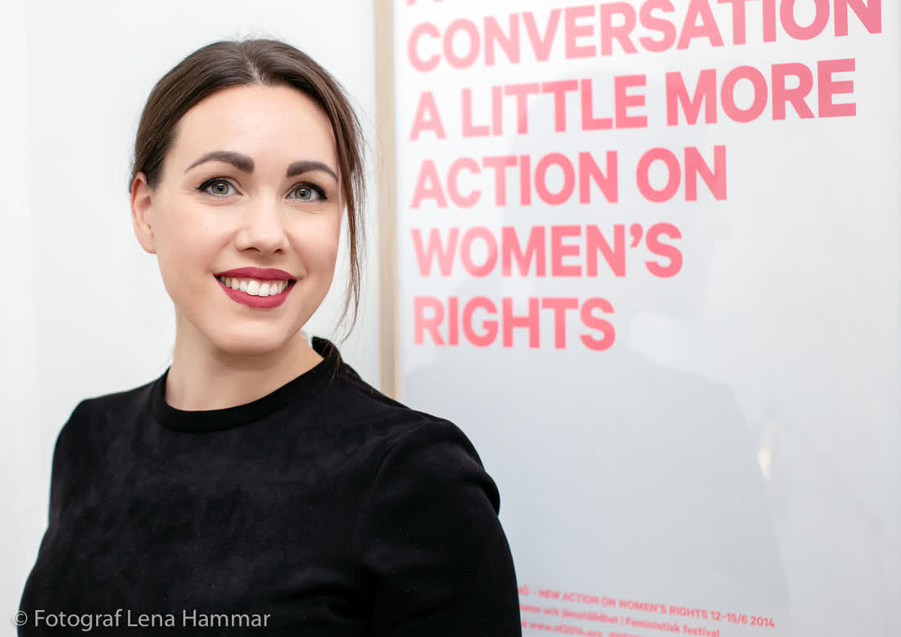

Över 300 bröllop. Noll uppställda konfettibilder.Okej, två. De var bra.


Jag fotar Stockholmsbröllop som ett reportage. Ni får en dag som ser ut som ett magasin, inte som ett katalogfoto.


Bildvägg från de senaste tolv bröllopen. Utan filter, med mycket dans.


Tio år på en kvällstidning lärde mig två saker: att alltid ha batterier i fickan och att det bästa ögonblicket händer precis när alla andra sänker kameran.
Nu använder jag samma instinkt på bröllop. Jag rör mig snabbt, syns lite och pratar gärna med er farfar om AIK.
Jag bor på Södermalm med min fru och en katt som heter Leica. Ja, verkligen.


| Stadshuset | 2 timmar. Vigsel, porträtt i Stadshusparken och på Riddarholmen. 200 bilder. | 9 900 kr |
| Hela dagen | 10 timmar reportage. 700+ bilder, online-galleri, tryckfiler. | 34 000 kr |
| Dubbel | Två fotografer hela dagen. För stora bröllop, 120+ gäster. | 46 000 kr |
| Magasinet | Tryckt bröllopstidning, 40 sidor, 30 exemplar till gästerna. | 6 500 kr |
"Det ser ut som en film. Mina föräldrar trodde vi hade anlitat ett produktionsbolag."Linn & Ahmed
"Alex fick med när min bror ramlade av stolen under talet. Bästa bilden i hela galleriet."Johanna & Erik
"Snabbaste leveransen och bästa bilderna av alla våra vänners bröllop. Sorry, vänner."Moa & Daniel
Ja, hela Mälardalen utan reseavgift. Längre bort: vi löser det.
Jag skickar en mall och vi går igenom den på ett videosamtal tre veckor innan.
Nej. Men ni får varenda bra bild, redigerad.
alex@sundljus.se · 070-412 88 31 · svar inom ett dygn